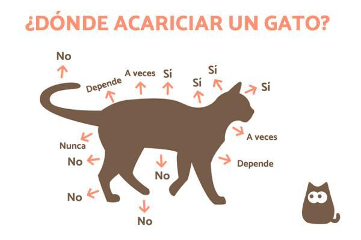
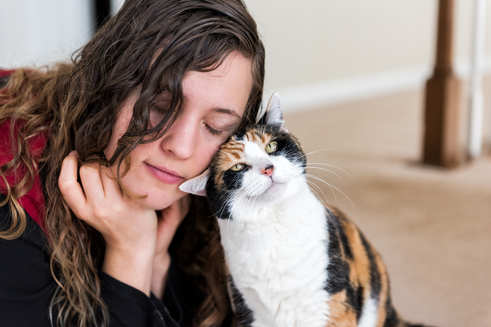
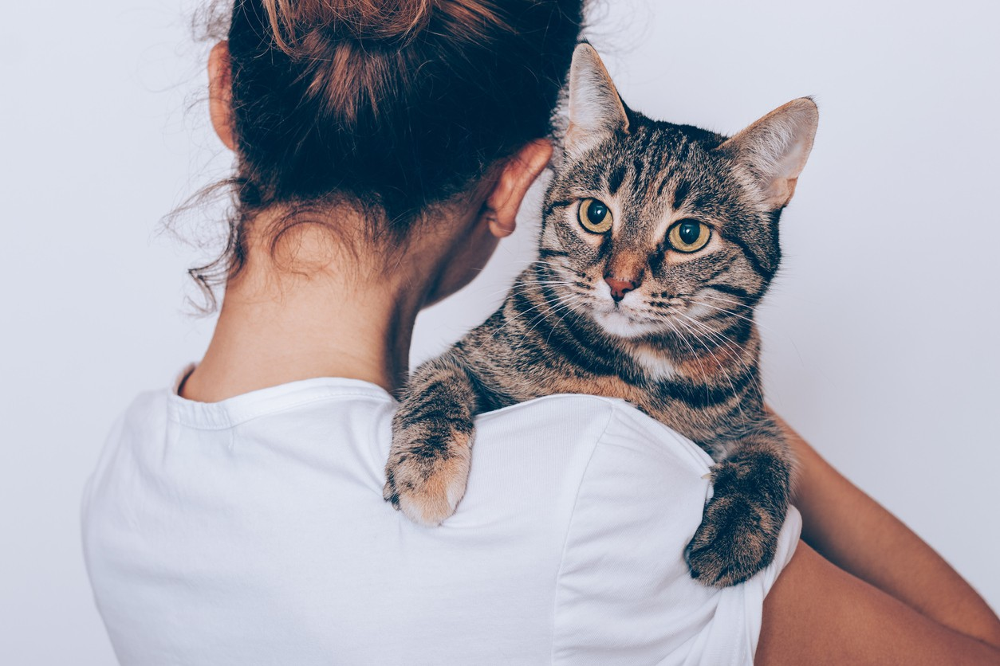
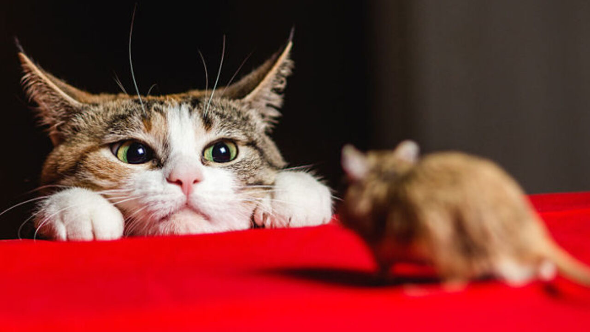
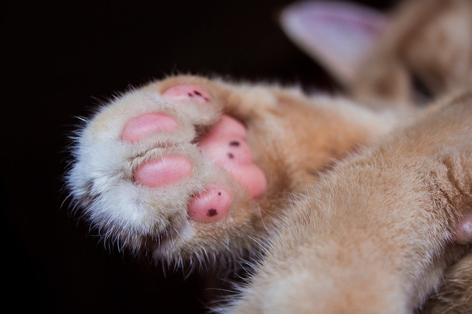
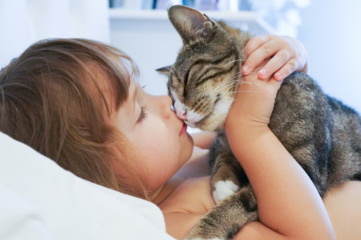
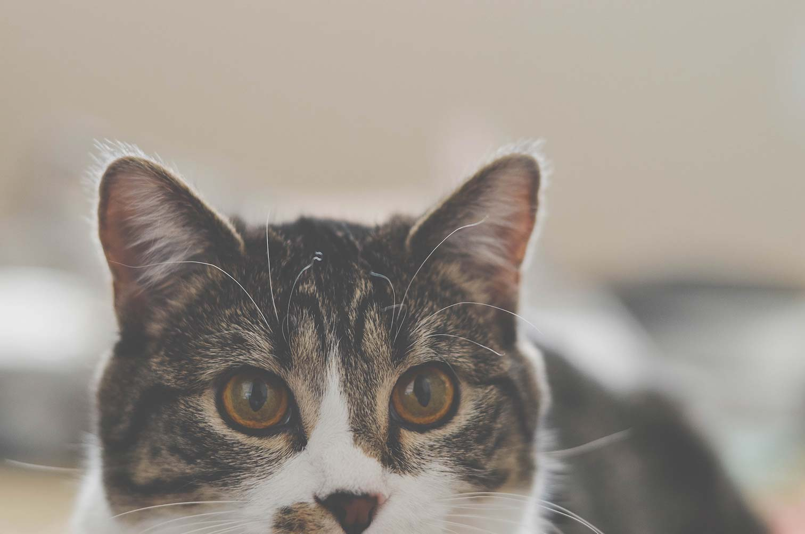
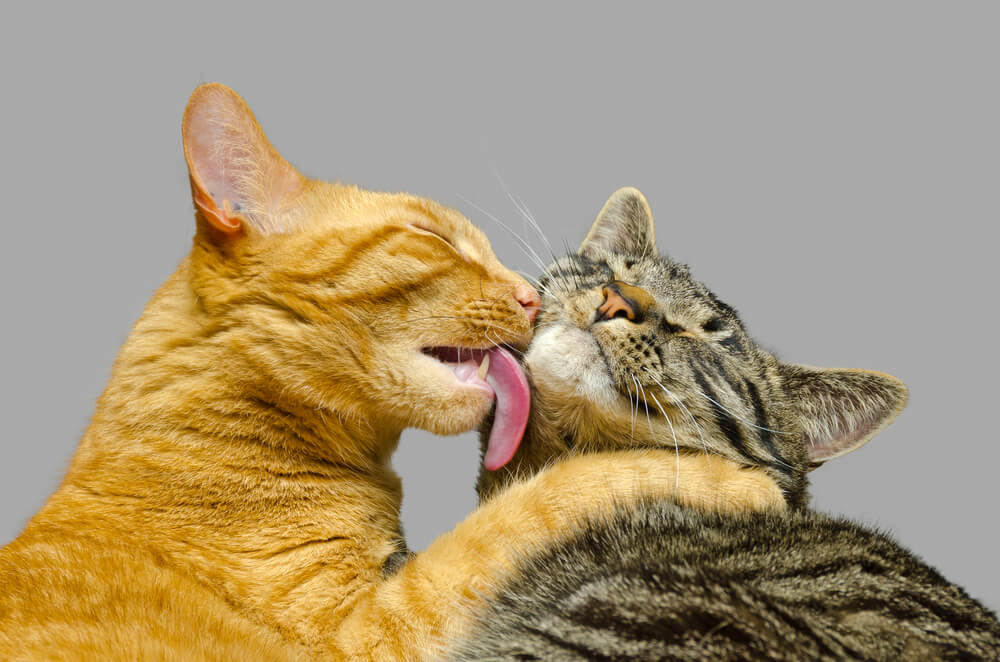

|
|
Beneficios
- El ronroneo reduce el dolor y mejora la curación: La vibración y el sonido que producen los gatos cuando ronronean
no solo relaja de forma natural a las personas, sino que, además, está relacionado con la reducción del dolor y la
curación de tejidos.
- Reduce el estrés: Está comprobado que acariciar a un gato es terapéutico, reduce los niveles de cortisol (hormona
relacionada con el estrés) a la vez que produce una sensación relajante.
- Disminuye las probabilidades de sufrir alergias: Los niños que crecen con un gato en casa desarrollan un sistema
inmunológico más fuerte frente a diferentes enfermedades como las alergias y el asma.
- Controlador de plagas: Y, si todo esto te parece poco, tener un gato en casa también ayuda a mantener tu hogar
libre de insectos, ratones y otras plagas con su espíritu cazador. Antiguamente era un animal que se utilizaba con
este fin en las casas pero que, con el tiempo, terminó ganándose un hueco como compañero de vida.
- Mitiga la depresión: Los gatos reducen el sentimiento de tristeza y soledad, siendo capaces de ayudar en casos
de depresión y ansiedad con solo su presencia y compañía.
Curiosidades
- Los gatos pueden pasar hasta 14 horas dormidos.
- Tienen una flexibilidad y agilidad impresionante, pueden saltar desde más de 3 metros de altura.
- La audición del gato promedio es al menos cinco veces más aguda que la de un adulto humano.
- La mayoría de los gatos no tienen pestañas.
- Los gatos maúllan principalmente en su comunicación con los humanos y casi nunca con otros felinos.
- Los gatos pueden transmitir estados de ánimos con su cola.
Si un gato levanta la cola y la mantiene estirada totalmente hacia arriba, está saludando.
- No todos los gatos tienen las almohadillas rosas. Si el gato es negro, las tendrá negras, si
es clarito, las tendrá rositas y si presenta varios colores serán multicolor.
- Los gatos, salvo excepciones de mininos polidáctiles, tienen 5 dedos en cada una de sus patas delanteras y 4 en las traseras.
|
|  |
|  |
|  |
|  |
|  |
|  |
|  |
|  |
|